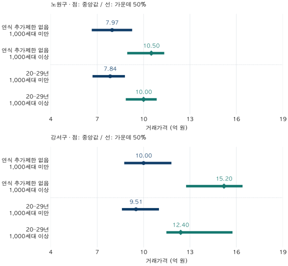

단지 조건 비교 · 규모와 가격 차이
1,000세대 대단지 아파트는 얼마나 비쌀까? 연식을 맞춘 비교
노원·강서의 2026년 상반기 84㎡ 실거래를 1,000세대 미만·이상으로 비교합니다. 세대수 확인 표본과 연식 제한에 따라 달라지는 가격 격차, 대단지 효과·환금성으로 해석할 때의 한계를 살펴보세요.
분석 기간 · 2026년 1~6월 계약 | 보유 자료 스냅샷 생성 · 2026-10-04
1,000세대 이상인 아파트라면 얼마나 더 비쌀까요? 노원·강서의2026년 상반기 전용84㎡ 이상~85㎡ 미만 중 세대수를 확인할 수 있는 표본에서는1,000세대 이상군의 중앙값이 더 높았습니다. 다만 연식 조건을 바꾸면 격차도 달라집니다. 세대수 하나에 붙는 고정된 가격표로 읽기 어려운 이유를 살펴봅니다.
‘1,000세대’는 단지 전체인가요,내 평형인가요?
이 글에서 규모는 분석 단지 전체의 확인된 주택 세대수입니다.1,000세대는 ‘이상’군에 들어갑니다. 관심 있는84㎡ 주택이1,000채라는 뜻이나 실제 거주 가구 수,매물 수가 아닙니다. 1,000세대 경계는 이번 비교를 위해 사전에 정한 기준이며 법적 대단지 기준이나 최적 규모라고 주장하지 않습니다.
세대수 숫자가 있어도 거래가 모이는 단지 전체를 가리키는지 확인해야 합니다. 건축물대장의 한 동이나 대표 지번에 해당하는 일부 건물만 세어 놓고,여러 동의 거래를 모두 붙이면 분모가 작아질 수 있습니다. 주소별 합계와 다른 표의 합계가 같아도 두 자료가 같은 일부 범위를 가리킨다면 충분한 확인이 아닙니다.
이번에는 검증된 면적별 세대수 합계가 있거나,단지 기본정보와 전체 세대수가 일치하는 등 기존 재고 확인 규칙을 통과한 단지만 사용했습니다. 공동 필지의 단지 구분이 불명확한 경우,원천 간 세대수 충돌이나 시점별 변경이 해결되지 않은 경우 등을 제외합니다. 현재 확인한 세대수를 사용하며 계약 당시의 과거 재고를 복원한 것은 아닙니다.
두 구의 모든84㎡ 거래가 들어갔나요?
그렇지는 않습니다. 먼저 앞선 동별 가격 글과 같은 기간·면적·거래 정제 기준으로 출발한 뒤,세대수 비교에 쓸 수 있는 단지의 거래만 남겼습니다. 노원802건 중678건,강서726건 중633건입니다.
| 지역 | 정제 후 대상 | 규모 비교 포함 | 재고 확인 규칙 제외 | 포함률 |
|---|---|---|---|---|
| 노원구 | 802 | 678 | 124 | 84.5% |
| 강서구 | 726 | 633 | 93 | 87.2% |
이 포함률은 해당 기간·면적의 관측 거래 기준입니다. 구 전체 단지나 주택 세대수의 포함률이 아닙니다. 자료가 확인되는 단지와 빠진 단지의 특성이 다를 수 있으므로,결과를 두 구의 모든 주택 가격으로 일반화하지 않습니다. 제외된 거래를 가격0원이나 소규모 단지로 분류하지도 않았습니다.
기존 재고 검증 규칙에 맞춰 건축연도2025년 미만인 단지를 대상으로 했습니다. 아래 ‘연식 추가 제한 없음’은 이 적격 표본 안에서20–29년으로 더 좁히지 않았다는 뜻이며,2025~2026년 신축까지 모두 포함했다는 뜻이 아닙니다. 두 구는 기존 사례 지역을 이어 사용했으며 가격 격차가 큰 지역을 찾아 고른 것이 아닙니다.
1,000세대 미만과 이상의 가격은 얼마나 다른가요?
그림의 점은 거래 중앙값,선은 가운데50% 구간입니다. 이 구간 밖에도 나머지 절반의 거래가 있습니다. 가격은 모두 억 원이며,소수 둘째 자리 표시 전의 만원 값으로 격차를 계산했습니다.

노원:1,000세대 이상군 중앙값10.50억 원
| 연식 조건·규모 | 거래 건수 | 거래 단지 수 | 하위25% | 중앙값 | 상위25% |
|---|---|---|---|---|---|
| 연식 추가 제한 없음 1,000세대 미만 | 560 | 101 | 6.65 | 7.97 | 9.26 |
| 연식 추가 제한 없음 1,000세대 이상 | 118 | 10개 미만 | 8.94 | 10.50 | 11.34 |
| 20–29년 1,000세대 미만 | 306 | 61 | 6.70 | 7.84 | 8.80 |
| 20–29년 1,000세대 이상 | 81 | 10개 미만 | 8.85 | 10.00 | 10.85 |
좁은 화면에서는 표를 좌우로 움직일 수 있습니다. 단지수10개 미만은 정확한 수 대신 구간으로 표시합니다. 거래1건이 집계에서 한 표를 가지므로,단지마다 같은 비중을 주는 평균과 다릅니다.
연식을 추가 제한하지 않으면 미만군560건의 중앙값은7.965억 원,이상군118건은10.50억 원입니다. 차액은2.535억 원,미만군 대비31.83%입니다. 표의7.97억 원으로 비율을 다시 계산하면 표시 전 값으로 구한 결과와 조금 다를 수 있습니다.
강서:같은84㎡ 안에서도 규모군별 차이가 큽니다
| 연식 조건·규모 | 거래 건수 | 거래 단지 수 | 하위25% | 중앙값 | 상위25% |
|---|---|---|---|---|---|
| 연식 추가 제한 없음 1,000세대 미만 | 492 | 106 | 8.75 | 10.00 | 11.80 |
| 연식 추가 제한 없음 1,000세대 이상 | 141 | 12 | 12.75 | 15.20 | 16.40 |
| 20–29년 1,000세대 미만 | 250 | 62 | 8.60 | 9.51 | 11.00 |
| 20–29년 1,000세대 이상 | 59 | 10개 미만 | 11.48 | 12.40 | 15.75 |
연식 추가 제한이 없을 때 미만군492건은10.00억 원,이상군141건은15.20억 원입니다.5.20억 원,52.00% 차이입니다. 그러나 두 군이 같은 동네와 연식·층으로 구성됐다고 보장하지 않습니다. 큰 단지라는 이유만으로 내 후보의 가격에52%를 더할 수는 없습니다.
연식을20–29년으로 제한하면 격차는 어떻게 되나요?
연식은 계약연도−건축연도입니다.2026년 계약에서20–29년은1997~2006년 건축에 해당하며,사용승인일의 월·일까지 맞춘 만 나이는 아닙니다. 결과를 보기 전에 이 구간을 정했습니다. 같은 연식 구간 안에도 최대9년 차이가 남습니다.
| 지역·연식 조건 | 이상−미만 차액 | 미만 대비 비율 |
|---|---|---|
| 노원구 · 연식 추가 제한 없음 | +2.54 | +31.83% |
| 노원구 · 20–29년 | +2.16 | +27.55% |
| 강서구 · 연식 추가 제한 없음 | +5.20 | +52.00% |
| 강서구 · 20–29년 | +2.89 | +30.39% |
계산은 이상군 중앙값−미만군 중앙값,비율은 (이상군÷미만군−1)×100입니다.20–29년에서 노원은2.16억 원·27.55%,강서는2.89억 원·30.39%입니다. 각 군의 개별 거래 차액을 구한 결과가 아니라 두 중앙값의 차이입니다.
특히 강서는52.00%에서30.39%로 달라집니다. 하지만 두 값을 빼서 “나머지21.61%포인트가 연식 때문”이라고 해석하지 않습니다. 연식을 제한하면서 거래 단지·동네·층·계약월과 비중도 함께 바뀌었습니다. 같은 표본에서 연식만 제거한 실험이 아닙니다. 연식군 가격표 자체의 한계는 신축 프리미엄과 연식별 비교에서 더 설명합니다.
차이가 남았으니 대단지 효과가 입증된 걸까요?
가장 강한 반론은 “면적·지역·기간·연식을 좁혀도 더 비싸니 규모의 장점이 있는 것 아닌가”입니다. 이번 관측 표본에서 가격 차이가 남는다는 점은 확인할 수 있습니다. 다만 법정동과 역 접근성,브랜드,층·향·수리 상태,시설과 단지 내 위치를 같게 만들지 않았습니다. 규모의 인과적 효과와 다른 특성의 가격을 분리하지 못합니다.
또한1,000세대 미만군에는 서로 크기가 다른 단지가 섞여 있고,이상군도 정확히1,000세대만의 집계가 아닙니다. 이 비교는999세대와1,000세대 사이에서 가격이 뛰는지 확인한 분석이 아닙니다. 결과가 큰 구만 다시 고르거나,여러 경계를 시험해 가장 유리한 숫자를 발표하지 않았습니다.
거래가 많다는 말과 빨리 팔린다는 말도 구분해야 합니다
이 표의 거래 건수는 가격 근거가 얼마나 있는지를 보여줍니다. 거래된 단지 수와 주택 수가 다른 두 군의 총거래수만으로 환금성을 순위 매길 수는 없습니다. 특정 면적의 거래 활동을 세대수로 나누려면 분모도 그 면적의 확인된 세대수여야 합니다. 전체 단지 규모를 그대로 나누거나,거래 비중으로 면적별 재고를 만들어 쓰지 않습니다.
기간과 재고를 맞춘 거래 빈도를 구하더라도 매물을 내놓은 날부터 팔릴 때까지의 시간이나 원하는 가격에 팔릴 확률은 별도 자료가 필요합니다. 반복 매매는 여러 거래로 잡힐 수 있고,거래0건인 단지도 분모에 남겨야 합니다. 이 글은 매물·매각 소요기간·관리비·주거 만족도를 측정하지 않았습니다.
규모가 다른 두 후보는 어떻게 비교하면 좋을까요?
- 세대수의 날짜와 범위를 적습니다. 거래 단지 전체인지,같은 이름의 다른 단지나 일부 건물을 섞거나 빠뜨리지 않았는지 확인합니다.
- 가격 조건을 먼저 좁힙니다. 같은 생활권·전용면적·가까운 계약월·유사한 연식부터 맞추고 층·상태의 남은 차이를 적습니다.
- 거래 건수와 단지 수를 구분합니다.118건이118개 단지를 의미하지는 않습니다. 자료가 부족한 후보의 가격을 규모군 중앙값으로 대체하지 않습니다.
- 가격 밖의 조건은 별도로 확인합니다.관리비 내역·주차·동선·시설 이용 조건은 실제 자료와 현장에서 확인합니다. 단지 전체가 커도 내 동의 이용 조건은 다를 수 있습니다.
자료·재고 확인·가격 공개·대조 방법 펼치기
- 원천: 국토교통부 매매 실거래가 상세 자료의 자체 정제 관측 거래와,건축물대장·K-apt 공동주택관리정보 등을 연결해 검증한 단지 재고입니다. 국토부 공식 규모별 통계나 현재 매물 가격이 아닙니다.
- 대상: 노원·강서,2026년1~6월,84≤전용면적<85㎡,기존 가격 비교 적격 매매에서 토지임대부 제외. 앞선 동별 글의 정제 모집단에 재고 확인 규칙을 추가했습니다. 미확인 재고는 작은 단지로 치환하지 않았습니다.
- 재고:현재 확인된 단지별 양의 정수 세대수와 건축연도,지리 연결을 요구합니다. 검증된 면적별 재고 또는 독립된 기본정보의 전체 세대수 대조를 사용합니다. 공동 필지·중복 연결·시점별 세대수 변경·미해결 충돌·비현실적인 규모 등을 검사합니다. 기존 연구의2025년 미만 건축 조건도 유지했습니다. 2026년4월24일·6월26일·8월28일·10월2일 기본정보 스냅샷을 대조한 재고이며,재고 집계 생성일은10월4일입니다. 계약 당시 재고의 완전한 복원은 아닙니다.
- 집계:거래1건=1표의 선형 보간25·50·75분위수.1,000세대 미만/이상을 사전 고정하고20–29년 제한을 함께 비교했습니다. 가격 공개 기준40건·2단지 이상을8칸 모두 통과했습니다. 정확한 건수 공개 기준10건과 연식 하위표본의 차집합도 검사했습니다. 단지수10미만은 구간으로 표시합니다. 이 기준은 가격 정확성이나 충분한 인과 통제를 보증하지 않습니다.
- 검증:관측 테이블SQL과 별도 매매 사실 테이블·단지 마스터Python 계산에서 규모 분류·연식·건수·단지수·분위수를 대조했습니다. 두 계산은 같은 검증된 재고 적격 집합을 사용합니다. 재고 연결을 독립적으로 다시 수집한 검증이라는 뜻은 아닙니다. 원천·재고의 최신성,유일한 연결키,거래 중복·마스터 누락과 앞선 동별 글의 모집단 합계를 확인했습니다.
- 시점:거래 스냅샷 생성일2026-10-04,수록 기준 끝월2026-09. 실제 정보 도착 컷오프는 미상입니다.6월 종료는 앞선 비교와 맞춘 회고 기준이며,6월 말 당시 알 수 있던 자료만의 분석은 아닙니다. 공개 집계JSON은 반올림 전 값만 담고 개별 거래·단지 식별자·모형 가격은 담지 않습니다.
계산·분석·집필:파파펭귄 (Nobot Kang). 에이전트로 집계 대조·계산·초안 검토를 보조했습니다. 공식 출처 확인일:2026-10-10.